Lecture 10B: Rigid Diaphragms
Rigid Diaphragm Introduction:
This lecture will cover the code provisions and analysis procedures for rigid diaphragms. Similar to flexible diaphragms, the analysis procedure for rigid diaphragms is not outlined in ASCE 7. The main question related to rigid diaphragms on the seismic exam is determining the forces to each shear wall, which requires a bit of calculation effort.
Before starting, let’s recap some definitions:
Diaphragm = A structural element that can transmit in plane shear forces to the LFRS of a structure.
LFRS = Lateral Force Resisting System, this is the chosen system that resists lateral earthquake forces. The LFRS transfers forces from the diaphragm to the level below. The typical LFRS used in diaphragm analysis for the seismic exam will be shearwalls.
Vertical Resisting Element = A single lateral resisting element of the LFRS, so a single continuous shearwall or a single braced frame or a single moment frame.
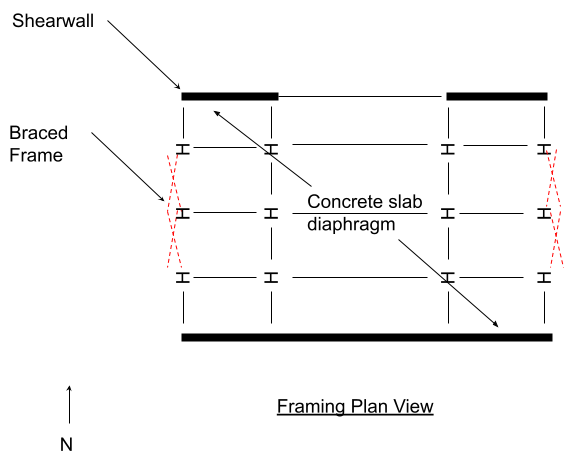Let’s put our terminology to the test. In the above floor plan, the LFRS is comprised of shearwalls in the E-W direction and braced frames in the N-S direction. The diaphragm is a concrete slab spanning over the steel beams. There are multiple vertical resisting elements, including multiple shearwalls and multiple braced frames.
Rigid vs Flexible
What’s the difference between a rigid diaphragm and a flexible diaphragm? We learned in the previous section that you can check the rigidity of a diaphragm using ASCE 7 based off relative deflections of the diaphragm vs lateral resisting elements. But what is the fundamental difference?
Put simply, a flexible diaphragm is one that can be analyzed as being infinitely more flexible than the lateral resisting system. A rigid diaphragm on the other hand can be analyzed as being infinitely more stiff than the lateral resisting system. When you classify either the diaphragm or the LFRS as being <q>infinitely more stiff</q>than the other, you are effectively creating boundary conditions in the analytical model. These boundary conditions make the mathematics significantly easier than if you were to try to realistically account for the relative stiffness of each. This simplified mathematics can be solved by hand (very convenient for the seismic exam).
We previously analyzed flexible diaphragms where the stiffness of the LFRS was infinitely higher than the diaphragm, meaning we could treat the diaphragm as a beam and the LFRS as pin supports. Pin supports are fixed and will not move at all.
For a rigid diaphragm system, the diaphragm is <q>fixed</q> and the LFRS will have some level of deflection. We can’t solve this type of system as a simply supported beam system. Because the connection between the diaphragm and LFRS is more <q>fixed</q>, the deciding factor for how forces are proportioned to each lateral element will depend on the relative stiffness and location of each vertical resisting element.
Relative Stiffness: The ratio of forces distributed between the lateral elements depend in part on how stiff each element is to the others. Therefore the most stiff elements will receive more force. Less stiff elements receive less force
Location: The other component of how forces are proportioned to lateral elements is the distance between any lateral element and the applied force. Lateral elements closer to the applied force will receive more force, elements further away will receive less.
Semi Rigid
What happens if the diaphragm doesn’t meet the requirements of flexible or rigid? A diaphragm that should not be analyzed as being infinitely stiff or infinitely flexible is categorized as <q>Semi Rigid</q>. As the name implies, this diaphragm is not completely flexibly nor completely rigid. The force flow through a semi rigid diaphragm is therefore more complex because the mathematical simplifications used previously do not apply. This type of analysis procedure is best suited for a computer software where the exact stiffness of both the diaphragm and lateral system is modeled. Semi Rigid diaphragm analysis is NOT covered in the seismic exam.
ASCE 7 Rigid Diaphragm Requirements:
ASCE 7 section 12.8.4 states <q>The seismic design story shear (Vx) [kip (kN)] shall be distributed to the various vertical elements of the seismic force-resisting system in the story under consideration based on the relative lateral stiffness of the vertical resisting elements and the diaphragm. </q> Put simply, the relative stiffness of the diaphragm compared to the LFRS determines the analysis procedure. There are three basic diaphragm analysis types: flexible, rigid, and sem rigid.
A <q> rigid </q> diaphragm is not flexible. Neither is a <q>semi rigid</q> diaphragm.
ASCE 7 section 12.8.4.1 states: <q>Inherent Torsion: For diaphragms that are <b>not flexible</b>, the distribution of lateral forces at each level shall consider the effect of the inherent torsional moment, Mt, resulting from eccentricity between the locations of the <b><u>center of mass and the center of rigidity</u></b>. For flexible diaphragms, the distribution of forces to the vertical elements shall account for the position and distribution of the masses supported. </q>
When analyzing forces through a flexible diaphragm, we will need to determine the center of mass of the level under consideration, as well as the center of rigidity.
Center of Mass
We know how to determine the seismic force at any level in a building, but exactly where does this force act? For flexible diaphragm analysis, we usually would treat the seismic force as a uniformly distributed load across the length of the level. That works well with the simply supported beam analysis procedure for flexible diaphragms.
(insert image of a uniformly distributed load at a floor plan view)
For a rigid diaphragm, we apply the force at a single point all at once. So instead of a uniform load (plf), we would have a point load (lb). But where is this single point? Recall that the source of our seismic force is simply the mass of the building, so the location of the applied force is just at the center of the floor level mass. This is seen in plan view:
(insert image of a CM with a point load along the CM, floor plan view)
Determining the center of mass (CM) for a level is fairly straight forward:
(Lecture team please show the formulas and state the definitions of the variables. Please provide a short example where you are given a rectangular floor plan with three wall lines in the N-S direction, and 2 wall lines in the E-W direction. Please clearly label the origin)
Center of Rigidity
Similar to the center of mass, the center of rigidity is determined by tabulating the different sources of rigidity and their distance. It could also be considered as the center point of the diaphragm support.
The rigidity comes from the LFRS that is directly below the level under consideration. At any level, the floor or diaphragm is being supported vertically by some sort of framing or walls directly below, these vertical elements below are what will be taking on the lateral loads distributed throughout the diaphragm. So to determine the center of rigidity we will always be looking at the rigidity of the vertical elements below the diaphragm under consideration.
(Lecture team please show the formulas and state the definitions of the variables. Please provide a short example where you are given the rigidity values and the locations/distances. Use the same floor plan as the Center Mass example above)
Relative Rigidity of Shearwalls
The procedure for determining the center of rigidity has one additional step: Finding the relative rigidity of each vertical element.
On the seismic exam, it is very likely you will be directly given the relative rigidities of each vertical element when asked about a rigid diaphragm problem. However, you may need to determine these values yourself. The process is simple but can be time consuming. Also, if you have to determine these values by hand it is more likely the vertical elements will be cantilevered shear walls instead of moment frames or braced frames.
Rigidity can be expressed via formulas that look very similar to deflection equations.
(lecture team please fill the below formula out and explain what each part of the equation represents)
Cantilever wall Rigidity =
Fixed wall rigidity =
Each shearwall would get a single rigidity value using one of the above equations, and then you could use the center of rigidity formula.
Use the cantilever wall formula for a shearwall that is not continuous above the level under consideration. In simpler terms, if you’re analyzing the diaphragm forces at the roof level, the vertical elements below should be analyzed as a cantilever wall. Also, if you aren’t explicitly told in the problem statement if you have a cantilevered wall condition or fixed wall condition, just assume it is cantilevered.
The fixed wall formula should be used if the problem statement explicitly says the vertical elements are fixed at both ends, or if you can identify that you’re analyzing a floor level that has continuous shearwalls that extend above the current level.
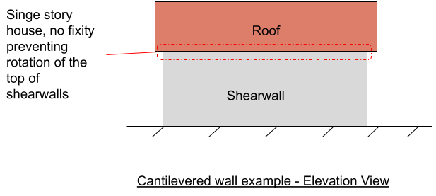
(do a single simple example for the rigidity of a single cantilever shearwall)
Inherent Torsional Moment
With the center of mass and center of rigidity identified, let’s look at an example floor plan and introduce the inherent torsional moment.
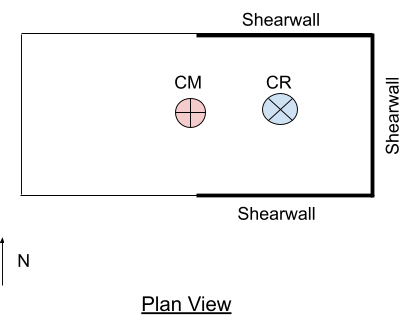The above plan view is for a cantilevered structure that does not have a LFRS on the left side of the structure. Our CR would be offset to the right near the LFRS, while the CM may be closer to the direct center if the mass is evenly distributed. Clearly there is quite some distance between the applied load (from the mass) and the LFRS in the N-S direction.
The distance between the CM and CR is the <i>eccentricity</i> of applied load to the center of resistance. Recalling the definition of a moment, M = Force x Distance.
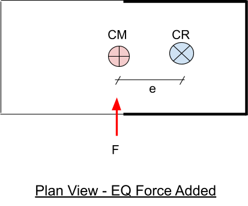 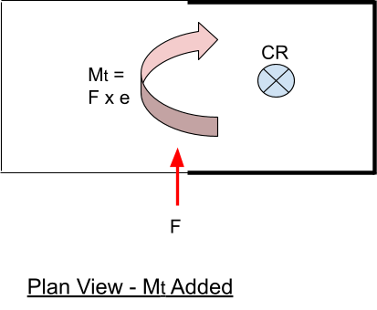This is the <q>Inherent Torsional Moment</q>. When the CM and CR are not aligned, a moment force will occur that needs to be included in the diaphragm analysis. This moment force will be resisted by all of the vertical elements depending on their distance and relative rigidity.
(Lecture team, please insert a picture with the CM and CR and ‘e’ labeled. Use floor plan from previous examples)
The inherent torsional moment <i>M<sub>t</sub></i>is simply a product of the seismic force and the eccentricity between center of rigidity (center of resistance) and center of mass (center of applied force).
M<sub>t</sub> = F x e
Accidental Torsional Moment
Per ASCE 7 section 12.8.4.2<q> Accidental Torsion: Where diaphragms are not flexible, the design shall include the inherent torsional moment (Mt) resulting from the location of the structure masses plus the accidental torsional moments (Mta) caused by assumed displacement of the center of mass each way from its actual location by a distance equal to 5% of the dimension of the structure perpendicular to the direction of the applied forces.</q>
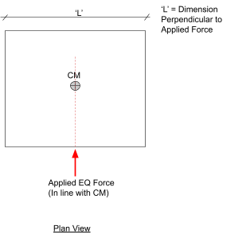Mass is the source of our seismic force, so in our structural model the total force will act in line with the CM. Since the exact location of the CM dictates the torsional moment, it is important to accurately predict the location. To account for the variability of the <q>true</q> CM with the CM calculated from analysis, ASCE 7 provision 12.8.4.2 requires the engineer to assume that the CM may be somewhere to the left or to the right of the calculated location.
This provision will require that you shift your CM by 5% of the length of the building (where length is taken as the dimension of the building perpendicular to the applied force, not necessarily the longer or shorter side).
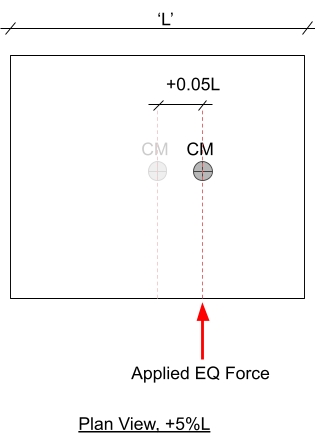 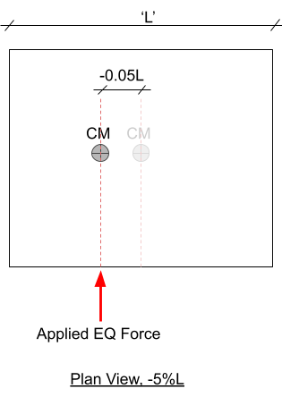The above sketches show how you would move the CM (and resultant EQ Force) to the right and to the left in plan view. This will impact the design of the LFRS because certain elements will get their most critical design force from the mass shifted to the right, and some shifted to the left.
Force Distribution to Vertical Elements
To actually solve for the force distribution to vertical elements, we will have needed to determine the following quantities:
(placeholder, fill this out)
The formula for determine the force at a vertical element is:
(insert the formula)
(explain the two components of the formula in max two sentences)
(continuing on the same example provided for the CM and CR, provide an example showing the forces at each shearwall.)

Rigid Diaphragm - Example #1
Given:
- Single-story building with masonry shear walls
- Concrete roof diaphragm
- Roof dead load weight DL = 90 psf
- Masonry shear wall dead load weight DL = 105 psf
- Window wall dead load weight DL = 15 psf
- Roof height = 12 ft
- Wall height = 12 ft
- Seismic base shear V
- N-S: V = 77.9 k
- E-W: V = 75.2 k
Find:
- Center of Mass (C.M.), (X<sub>CM</sub>, Y<sub>CM</sub>):
Before we start the calculations, it is important to decide the origin for the given diaphragm because all the calculations are done with respect to the origin decided. For this problem, we have taken the origin as the bottomost - left corner so that all the calculations can be done with respect to the positive x- and y- directions.
To calculate the Center of Mass, C.M. of the structure with respect to the origin, the following formulae are used:
X<sub>CM</sub> = sum(Wx)/sum(W)
Y<sub>CM</sub> = sum(Wy)/sum(W)
where ;
X<sub>CM</sub> = distance of C.M. from the origin in x- direction
Y<sub>CM</sub> = distance of C.M. from the origin in y- direction
To proceed with the problem, follow the given steps.
<u>Step 01: Distribute the structure into different sections</u>
The structure given in this problem is non-symmetrical, so it is hard to calculate the area of the roof. Hence, the structure is distributed into different sections to make the calculations easier. Let us distribute the structure into different sections as shown in the figure below.
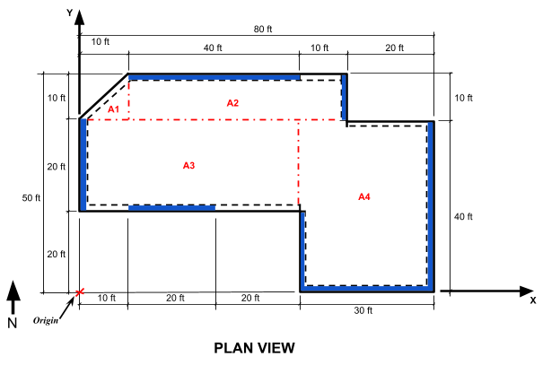<u>Step 02: Find the Areas of each section</u>
We can find the areas of each section as shown below.
A1 = 0.5 x 10 ft x 10 ft = 50 ft<sup>2</sup>
A2 = 10 ft x (40 + 10) ft = 500 ft<sup>2</sup>
A3 = 20 ft x (40 + 10) ft = 1000 ft<sup>2</sup>
A4 = 40 ft x (20 + 10) ft = 1200 ft<sup>2</sup>
<u>Step 03: Find the total weight of the structure resisted by the diaphragm:</u>
For a single story building, the diaphragm resists the roof weights, and the tributary wall weights for the shear walls and window walls. To proceed with the problem solution, first, let's find the roof weights. The dead load of the roof is given as 90 psf.
So, Roof Weight = Roof Dead Load x Roof Area.
Using this formula, we can calculate the roof weights for each section of the roof as shown below:
W1 = 90 psf x 50 ft<sup>2</sup> = 4500 lbs = 4.5 kips
W2 = 90 psf x 500 ft<sup>2</sup> = 45 kips
W3 = 90 psf x 1000 ft<sup>2</sup> = 90 kips
W4 = 90 psf x 1200 ft<sup>2</sup> = 108 kips
The next step is to find the wall weights. The given problem has both shear walls and window walls. First let us consider the shear walls as defined by the figure shown below. The dead load of the shear wall is given to be as 105 psf and the wall height is 12 ft.
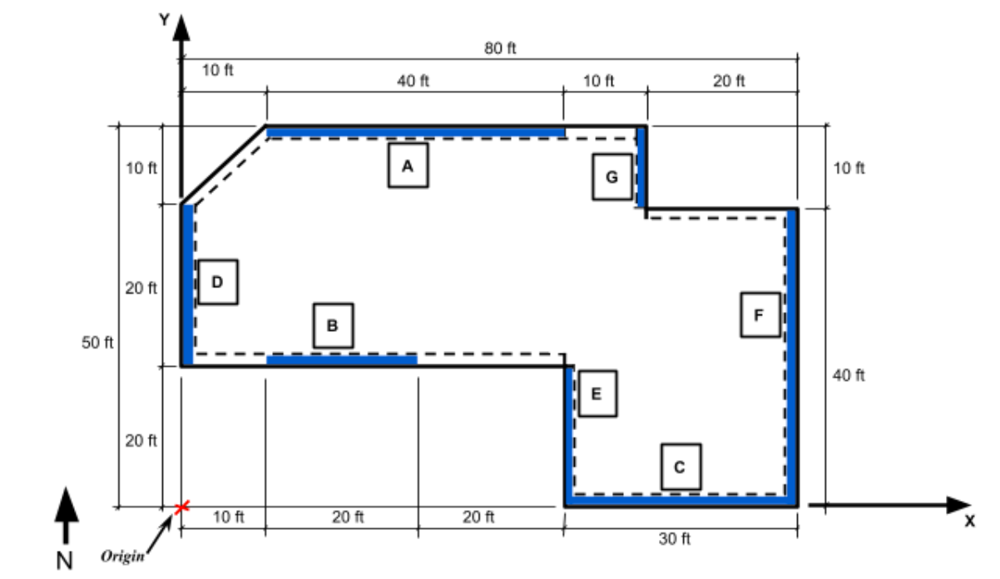It must be noted that only the tributary height of the walls is used to find the wall weights, where the tributary wall height is 0.5 x total wall height. For the given problem, the tributary wall height = 0.5 x12 ft = 6 ft
∴ Shear Wall Weight = Shear Wall Dead load x Tributary Wall Height x Length of Shear wall considered.
All the weights for shear walls can be calculated as shown below:
W<sub>A</sub> = 105 psf x 6 ft x 40 ft = 25.2 kips
W<sub>B</sub> = 105 psf x 6 ft x 20 ft = 12.6 kips
W<sub>C</sub> = 105 psf x 6 ft x 30 ft = 18.9 kips
W<sub>D</sub> = 105 psf x 6 ft x 20 ft = 12.6 kips
W<sub>E</sub> = 105 psf x 6 ft x 20 ft = 12.6 kips
W<sub>F</sub> = 105 psf x 6 ft x 40 ft = 25.2 kips
W<sub>G</sub> = 105 psf x 6 ft x 10 ft = 6.3 kips
In addition to the weights of shear walls, we must also consider the weight of window walls. For our example, all non-shear walls are considered as window walls with a dead load of 15 psf. The figure below defines the window walls in the structure.
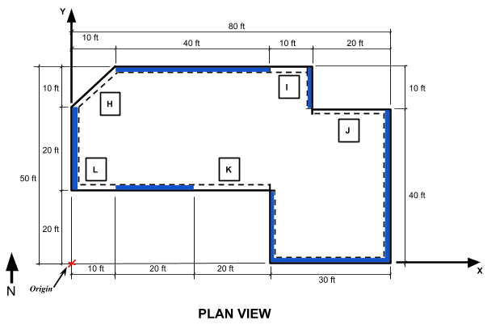The weights of these window walls can be calculated similar to the calculation of the shear wall weights.
∴ Window Wall Weight = Window Wall Dead load x Tributary Wall Height x Length of Window Wall considered.
All the weights for window walls can be calculated as shown below:
Length of wall H = sqrt (10^2 +10^2) = 14.14 ft
W<sub>H</sub> = 15 psf x 6 ft x 14.14 ft = 1.27 kips
W<sub>I</sub> = 15 psf x 6 ft x 10 ft = 0.9 kips
W<sub>J</sub> = 15 psf x 6 ft x 20 ft = 1.8 kips
W<sub>K</sub> = 15 psf x 6 ft x 20 ft = 1.8 kips
W<sub>L</sub> = 15 psf x 6 ft x 10 ft = 0.9 kips
<U> Step 04: The final step is to find the Center of mass:</u>
To proceed with the calculation, it is easier to form a table using the calculated weights and by calculating the distance of each element from the origin in the x- and y- direction.
The first column shows the exact calculation. The rest follows the same concept. It is recommended that you solve on your own and compare answers.
| Element | W (kips) | X (ft) | Y (ft) | W x X (kip-ft) | W x Y (kip-ft) |
| W1 | 4.5 | (⅔)x10 = 6.67 | (⅓)x10 + 40 = 43.33 | 4.5 x 6.67 = 30 | 4.5 x 43.33 = 195 |
| W2 | 45 | 35 | 45 | 1575 | 2025 |
| W3 | 90 | 25 | 30 | 2250 | 2700 |
| W4 | 108 | 65 | 20 | 7020 | 2160 |
| W<sub>A</sub> | 25.2 | 30 | 50 | 756 | 1260 |
| W<sub>B</sub> | 12.6 | 20 | 20 | 252 | 252 |
| W<sub>C</sub> | 18.9 | 65 | 0 | 1228.5 | 0 |
| W<sub>D</sub> | 12.6 | 0 | 30 | 0 | 378 |
| W<sub>E</sub> | 12.6 | 50 | 10 | 630 | 126 |
| W<sub>F</sub> | 25.2 | 80 | 20 | 2016 | 504 |
| W<sub>G</sub> | 6.3 | 60 | 45 | 378 | 283.5 |
| W<sub>H</sub> | 1.27 | 5 | 45 | 6.4 | 57.2 |
| W<sub>I</sub> | 0.9 | 55 | 50 | 49.5 | 45 |
| W<sub>J</sub> | 1.8 | 70 | 40 | 126 | 72 |
| W<sub>K</sub> | 1.8 | 30 | 20 | 54 | 36 |
| W<sub>L</sub> | 0.9 | 5 | 20 | 4.5 | 18 |
| Sum | 367.6 | 16375.9 | 10111.7 |
X<sub>CM</sub> = sum(Wx)/sum(W) = 16375.9/367.6 = 44.6 ft
Y<sub>CM</sub> = sum(Wy)/sum(W) = 10111.7 / 367.6 = 27.5 ft
So the <b>Center of Mass, C.M. = (X<sub>CM</sub>,Y<sub>CM</sub>) = (44.6, 27.5) ft</b> from the <i>origin</i>.
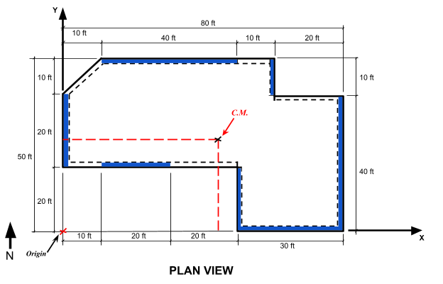
- Center of Rigidity (C.R.)
Rigid diaphragms distribute the forces based on the relative rigidities of the shear walls.
The Center of Rigidity, C.R. = (X<sub>R</sub>,Y<sub>R</sub>) can be found using the formulae:
X<sub>R</sub> = sum(Ry x X)/sum(Ry)
Y<sub>R</sub> = sum(Rx x Y)/sum(Rx)
Where,
R<sub>x</sub> = Relative Rigidity of shear walls along the x-direction, and
R<sub>y</sub> = Relative Rigidity of shear walls along the y-direction
X = distance of Shear wall from origin in x-direction
Y = distance of Shear wall from origin in y-direction
It must be noted that the distance of Center of Rigidity from the origin in the x-direction, (X<sub>R</sub>), will be based on the shear wall rigidities running along the y-direction. Similarly, the distance of Center of Rigidity from the origin in the y-direction, (Y<sub>R</sub>), will be based on the shear wall rigidities running along the x-direction. This might sound confusing! So, let us solve the problem for further clarification.
The first step to find the Center of Rigidity of the structure is that we must find the relative rigidities of the shear walls. The relative rigidities of concrete and masonry shear walls or piers can be found using the formula given in the table below, depending on whether the shear walls are fixed or cantilever. These formulae have been derived in the book <i>Reinforced Masonry Engineering Handbook: Clay and Concrete Masonry, Sixth Edition</i> starting on page 152/647.
| Type of Shear Wall | Relative Rigidity |
| Fixed Shear Walls / Piers | R<sub>f</sub> = 1 / (0.1(h/d)^3 + 0.3(h/d)) |
| Cantilever Shear Walls / Piers | R<sub>c</sub> = 1 / (0.4(h/d)^3 + 0.3(h/d)) |
A wall that is securely fixed to the foundation at the bottom and also fixed at the top is considered a fixed wall, and will act similar to a beam fixed at both ends.
As we are considering a single story building, the walls are fixed securely to the foundation but are free to translate and rotate from the top as the diaphragm deflects. So, the walls deflect similar to a cantilever beam which deflects and rotates at the end as the diaphragm deflects. Taking this into consideration, the shear walls are assumed as cantilever wall segments and the rigidity of these shear walls can be found using the formula 1 / (0.4(h/d)^3 + 0.3(h/d)).
Note: For the seismic exam, the relative rigidities of shear walls are usually given. But if not, you now know how to calculate them.
| Shear Wall | Height,h (ft) | Length,d (ft) | Relative Rigidity |
| Wall A | 12 | 40 | 9.92 |
| Wall B | 12 | 20 | 3.75 |
| Wall C | 12 | 30 | 6.87 |
| Wall D | 12 | 20 | 3.75 |
| Wall E | 12 | 20 | 3.75 |
| Wall F | 12 | 40 | 9.92 |
| Wall G | 12 | 10 | 0.95 |
Now that we have calculated the relative rigidities of the shear walls, the next and final step is to substitute them into the formulae. Please pay careful attention to this step as it is very important to get the directions correct for the shear walls.
To find the distance of the Center of Rigidity from the origin in the x-direction, consider the shear walls along the y-direction, namely, D, E, F, and G. So, the formulae can be written as:
X<sub>R</sub> = sum(Ry x X)/sum(Ry)
= (RdXd + ReXe + RfXf + RgXg) / (Rd + Re + Rf + Rg)
= (3.75x0 + 3.75x50 + 9.92x80 + 0.95x60) / (3.75 + 3.75 + 9.92 + 0.95)
= 56.5 ft
Similarly, to find the distance of the Center of Rigidity from the origin in the y-direction, consider the shear walls along the x-direction, namely, A, B, and C. So, the formulae can be written as:
Y<sub>R</sub> = sum(Rx x Y)/sum(Rx)
= (RaXa + RbXb + RcXc) / (Ra + Rb + Rc)
= (9.92x50 + 3.75x20 + 6.87x0) / (9.92 + 3.75 + 6.87)
= 27.8 ft
Finally the <b>Center of Rigidity, C.R. = (X<sub>R</sub>,Y<sub>R</sub>) = (56.5, 27.8) ft</b> from the <i>origin</i>.

Find:
- E-W Direction: Torsional Irregularity Check - Total design force to Shearwalls A & B & C
To determine the total design force to the shearwalls in the E-W direction, the shearwalls that are of interest are perpendicular to the direction of the force. Based on the floor plan, the shearwalls that correspond to the E-W direction are shearwalls A, B, and C (highlighted below in the figure).
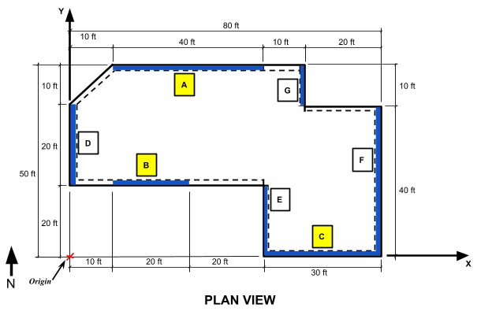In a rigid diaphragm, the rigidities or stiffnesses of the vertical elements will affect the force distribution. Since the center of mass and center of rigidity are not coinciding, there will be eccentricity in the diaphragm. The eccentricities will be calculated along the axis in the direction of the force. In this case, the eccentricities will be calculated along the y-axis since the direction of the force is in the E-W direction. As a result of the eccentricity present, an inherent moment (torsion) will be developed. Begin by finding the difference between the center of rigidity and center of mass in the vertical direction. This will be the calculated eccentricity.
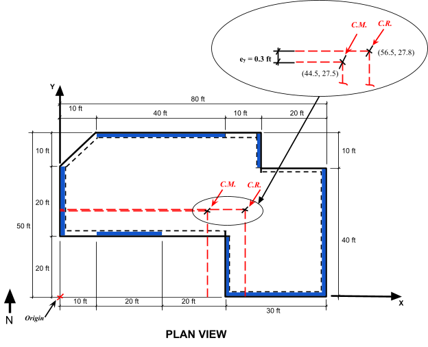Calculated eccentricity e<sub>y</sub> = Y<sub>R</sub> - Y<sub>CM</sub>
Calculated eccentricity e<sub>y</sub> = 27.8 ft - 27.5 ft = 0.3 ft
The inherent torsional moment is calculated using the conventional equation for determining the moment. The force component is the seismic base shear of 75.2 k. The moment arm component is the calculated eccentricity.
Inherent torsional moment M<sub>t</sub> = V * Calculated eccentricity e<sub>x</sub> Inherent torsional moment M<sub>t</sub> = 75.2 k * 0.3 ft = 22.6 k-ft
ASCE 7-16 prescribes an accidental eccentricity in the form of a 5% displacement that is applied on either side of the center of mass to account for the worst case scenario of force distribution to the shearwalls in a diaphragm. This means that even if the center of mass and center of rigidity do coincide with each other, the 5% displacement must still be applied to the diaphragm, which means that there will always be eccentricity present in rigid diaphragms.
To determine the accidental eccentricity, multiply the length of the diaphragm perpendicular to the direction of the force by 0.05. There will be two accidental eccentricities that are calculated to account for the 5% displacement on <i>either</i> side of the center of mass. Similar to the calculated eccentricity, there will be an accidental torsional moment that develops due to the accidental eccentricity.
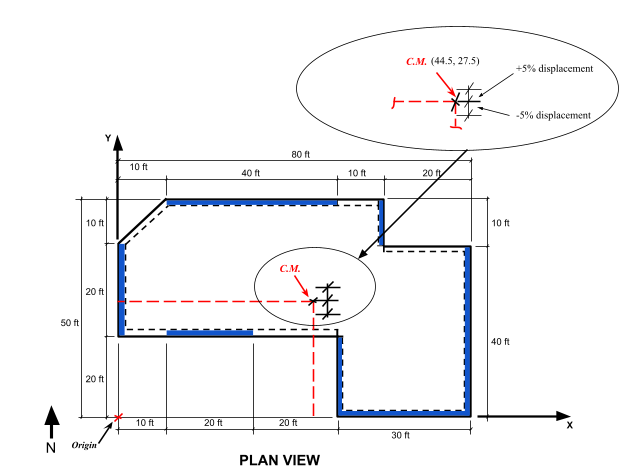Accidental eccentricity e<sub>y</sub> = +/- 0.05*L<sub>T</sub>
Accidental eccentricity e<sub>y</sub> = +/- 0.05 * 50 ft = +/- 2.5 ft
Accidental torsional moment M<sub>ta</sub> = V * Accidental eccentricity
Accidental torsional moment M<sub>ta</sub> = 75.2 k *(+/- 2.5 ft) = +/- 188 k-ft
Next, determine the total eccentricity, also known as the design eccentricity. Add the calculated eccentricity and the accidental eccentricity to obtain the design eccentricity. As previously stated, there will be two design eccentricities due to the two accidental eccentricities. After determining the design eccentricity, calculate the resulting inherent torsional moment.
Design eccentricity e<sub>yi</sub> = Calculated eccentricity e<sub>y</sub> + Accidental eccentricity e<sub>y</sub>
Design eccentricity e<sub>y1</sub> = 2.5 ft + 0.3 ft = 2.8 ft
Design eccentricity e<sub>y2</sub> = 2.5 ft - 0.3 ft = 2.2 ft
Inherent Torsional Moment M<sub>ti</sub> = V * Design eccentricity e<sub>yi</sub>
Inherent Torsional Moment M<sub>t1</sub> = 75.2 k * 2.8 ft = 210.6 k-ft
Inherent Torsional Moment M<sub>t2</sub> = 75.2 k * 2.2 ft = 165.4 k-ft
Note that there are two torsional moments due to the two accidental eccentricities.
As stated previously, force transfer in rigid diaphragms occurs based on the rigidities of the shearwalls. Using the rigidities calculated in Part B, find the sum of the rigidities of the shear walls in the E-W Direction. This will include shear walls A, B, and C.
R<sub>a</sub> = 9.92
R<sub>b</sub> = 3.72
R<sub>c</sub> = 6.87
$$ΣR_y = R_a+R_b+R_c$$
$$ΣR_y = 9.92 + 3.72 + 6.87 = 20.51$$
The total design force that will be distributed to each shearwall consists of the direct shear and the torsional shear. The direct shear comes from the vertical force distribution of the structure, while the torsional shear stems from the eccentric diaphragm loading (eccentricity in the diaphragm). The two shears for each shearwall will be calculated separately first, and then summed up together to obtain the total design force.
Design Forces: F<sub>A</sub>, F<sub>B</sub>, and F<sub>C</sub>
F<sub>i</sub> = Direct Shear + Torsional Shear
The direct shear will be calculated in the direction of the force because only vertical elements parallel to that direction will resist the direct shear. For this problem, the direction of the force is in the E-W direction, which means that the direct shear will be calculated in the same direction.
Since force distribution in a rigid diaphragm is dependent on the rigidities of the shearwalls, the direct shear that is distributed to a particular shearwall will be a product of the seismic base shear (in the direction of the force) and the ratio between the rigidity of the shearwall and the total rigidity (of the shearwalls in the direction of the force).
$$Direct Shear V_y = V * R/(ΣR_y)$$
V<sub>a</sub> = 75.2 k * 9.92/20.51 = 36.37 k
V<sub>b</sub> = 75.2 k * 3.72/20.51 = 13.64 k
V<sub>c</sub> = 75.2 k * 6.87/20.51 = 25.19 k
The torsional shear develops as a result of the eccentricity in a rigid diaphragm. Unlike the direct
shear, the torsional shear is resisted by all of the vertical elements. This means that the torsional
shear will be distributed to all of the vertical elements in the diaphragm. In other words, both the
vertical elements that are parallel and perpendicular to the direction of the force will resist the
torsional shear. In this problem, the torsional shear will be distributed to each of the shearwalls in the E-W direction, which means there will be a torsional shear calculated for each shearwall.
$$Torsional Shear V_T = (M_T*R*d)/(ΣR_y*d^2)$$

$$ V_Ta = (M_T1*R_a*d_a)/(ΣR_y*d_a^2)$$
V<sub>Ta</sub> = (210.6k-ft*9.92*23ft)/(20.51*9.92^2) = 23.81 k
$$ V_Tb = (M_T2*R_b*d_b)/(ΣR_y*d_b^2)$$
V<sub>Tb</sub> = (165.4k-ft*3.72*7ft)/(20.51*3.72^2) = 15.17 k
$$ V_Tc = (M_T1*R_c*d_c)/(ΣR_y*d_c^2)$$
V<sub>Tc</sub> = (165.4k-ft*6.87*27ft)/(20.51*6.87^2) = 31.69 k
Add the direct shear and torsional shear for each shearwall in the E-W to determine the
corresponding total design force.
Design Forces: F<sub>A</sub>, F<sub>B</sub>, and F<sub>C</sub>
F<sub>i</sub> = Direct Shear + Torsional Shear
| Shearwall | Direct Shear | Torsional Shear | Total Design Force |
| A | 36.37 k | 23.18 k | 59.55 k |
| BC | 13.64 k25.19 k | 15.17 k31.69 k | 28.81 k 56.88 k |
- N-S Direction: Torsional Irregularity Check - Total design force to shear walls D & E & F & G
To determine the total design force to the shearwalls in the N-S direction, the shearwalls that are of interest are perpendicular to the direction of the force. Based on the floor plan, the shearwalls that correspond to the N-S direction are shearwalls D, E, F, and G (highlighted below in the figure).
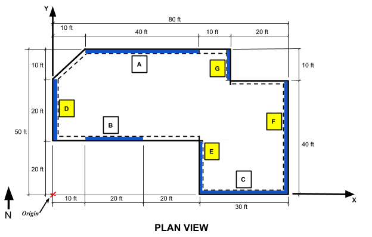In a rigid diaphragm, the rigidities or stiffnesses of the vertical elements will affect the force distribution. Since the center of mass and center of rigidity are not coinciding, there will be eccentricity in the diaphragm. The eccentricities will be calculated along the axis in the direction of the force. In this case, the eccentricities will be calculated along the y-axis since the direction of the force is in the N-S direction. As a result of the eccentricity present, an inherent moment (torsion) will be developed. Begin by finding the difference between the center of rigidity and center of mass in the vertical direction. This will be the calculated eccentricity.
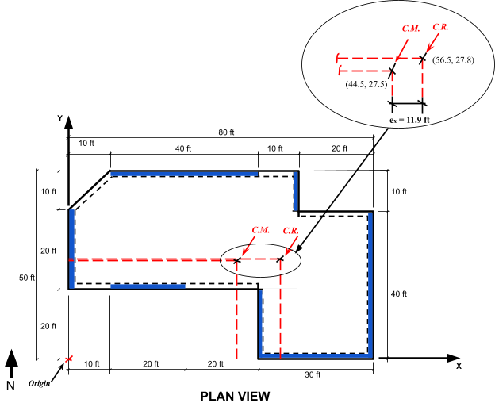Calculated eccentricity e<sub>x</sub> = X<sub>R</sub> - X<sub>CM</sub>
Calculated eccentricity e<sub>x</sub> = 56.5 ft - 44.6 ft = 11.9 ft
As stated in Part (c), the inherent torsional moment is calculated using the conventional equation for determining the moment. The force component is the seismic base shear of 77. 9 k. The moment arm component is the calculated eccentricity.
Inherent torsional moment M<sub>t</su> = V * Calculated eccentricity e<sub>x</sub>
Inherent torsional moment M<sub>t</su> = 77.9 k * 11.9 ft = 927.0 k-ft
ASCE 7-16 prescribes an accidental eccentricity in the form of a 5% displacement that is applied on either side of the center of mass to account for the worst case scenario of force distribution to the shearwalls in a diaphragm. This means that even if the center of mass and center of rigidity do coincide with each other, the 5% displacement must still be applied to the diaphragm, which means that there will always be eccentricity present in rigid diaphragms.
To determine the accidental eccentricity, multiply the length of the diaphragm perpendicular to the direction of the force by 0.05. There will be two accidental eccentricities that are calculated to account for the 5% displacement on <i>either</i> side of the center of mass. Similar to the calculated eccentricity, there will be an accidental torsional moment that develops due to the accidental eccentricity.
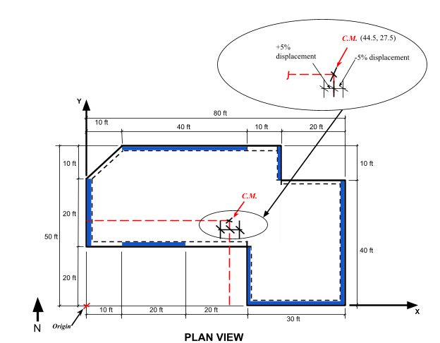Accidental eccentricity e<sub>x</sub> = +/- 0.05*L<sub>T</sub>
Accidental eccentricity e<sub>x</sub> = +/- 0.05 * 80 ft = +/- 4 ft
Accidental torsional moment M<sub>ta</sub> = V * Accidental eccentricity
Accidental torsional moment M<sub>ta</sub> = 77.9 k *(+/- 4 ft) = +/- 311.6 k-ft
Next, determine the total eccentricity, also known as the design eccentricity. Add the calculated eccentricity and the accidental eccentricity to obtain the design eccentricity. As previously stated, there will be two design eccentricities due to the two accidental eccentricities. After determining the design eccentricity, calculate the resulting inherent torsional moment.
Design eccentricity e<sub>xi</sub> = Calculated eccentricity e<sub>x</sub> + Accidental eccentricity e<sub>x</sub>
Design eccentricity e<sub>x1</sub> = 11.9 ft + 4 ft = 15.9 ft
Design eccentricity e<sub>x2</sub> = 11.9 ft - 4 ft = 7.9 ft
Inherent Torsional Moment M<sub>ti</sub> = V * Design eccentricity e<sub>xi</sub>
Inherent Torsional Moment M<sub>t1</sub> = 77.9 k * 15.9 ft = 1238.6 k-ft
Inherent Torsional Moment M<sub>t2</sub> = 77.9 k * 7.9 ft = 615.4 k-ft
Note that there are two torsional moments due to the two accidental eccentricities.
As stated previously, force transfer in rigid diaphragms occurs based on the rigidities of the shearwalls. Using the rigidities calculated in Part B, find the sum of the rigidities of the shear walls in the N-S Direction. This will include shear walls D, E, F, and G.
R<sub>d</sub> = 3.75
R<sub>e</sub> = 3.75
R<sub>f</sub> = 9.92
R<sub>g</sub> = 0.95
$$ΣR_x = R_d+R_e+R_f+R_g$$
$$ΣR_x = 3.75 + 3.75 + 9.92 + 0.95 = 18.37$$
The total design force that will be distributed to each shearwall consists of the direct shear and the torsional shear. The direct shear comes from the vertical force distribution of the structure, while the torsional shear stems from the eccentric diaphragm loading (eccentricity in the diaphragm). The two shears for each shearwall will be calculated separately first, and then summed up together to obtain the total design force.
Design Forces: F<sub>D</sub>, F<sub>E</sub>, F<sub>F</sub>,
and F<sub>G</sub>
F<sub>i</sub> = Direct Shear + Torsional Shear
The direct shear will be calculated in the direction of the force because only vertical elements parallel to that direction will resist the direct shear. For this problem, the direction of the force is in the N-S direction, which means that the direct shear will be calculated in the same direction.
Since force distribution in a rigid diaphragm is dependent on the rigidities of the shearwalls, the direct shear that is distributed to a particular shearwall will be a product of the seismic base shear (in the direction of the force) and the ratio between the rigidity of the shearwall and the total rigidity (of the shearwalls in the direction of the force).
$$Direct Shear V_x = V * R/(ΣR_x)$$
V<sub>d</sub> = 77.9 k * (3.75/18.37) = 15.90 k
V<sub>e</sub> = 77.9 k * (3.75/18.37) = 15.90 k
V<sub>f</sub> = 77.9 k * (9.92/18.37) = 42.07 k
V<sub>g</sub> = 77.9 * (0.95/18.37) = 4.03 k
The torsional shear develops as a result of the eccentricity in a rigid diaphragm. Unlike the direct
shear, the torsional shear is resisted by all of the vertical elements. This means that the torsional
shear will be distributed to all of the vertical elements in the diaphragm. In other words, both the
vertical elements that are parallel and perpendicular to the direction of the force will resist the
torsional shear. In this problem, the torsional shear will be distributed to each of the shearwalls in the N-S direction, which means there will be a torsional shear calculated for each shearwall.
$$Torsional Shear V_T = (M_T*R*d)/(ΣR_x*d^2)$$
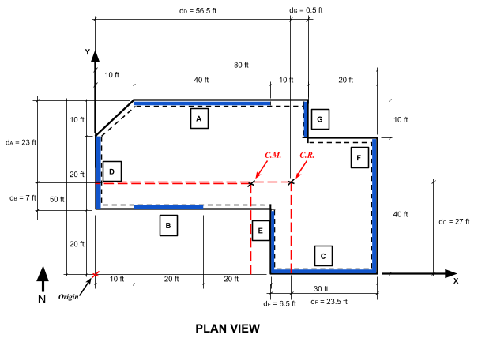$$ V_Td = (M_T2*R_d*d_d)/(ΣR_x*d_d^2)$$
V<sub>Td</sub> = (615.4k-ft*3.75*56.5ft)/(18.37*3.75^2) = 504.74 k
$$ V_Te = (M_T1*R_e*d_e)/(ΣR_x*d_e^2)$$
V<sub>Te</sub> = (1238.6k-ft*3.75*6.5ft)/(18.37*3.75^2) = 116.87 k
$$ V_Tf = (M_T1*R_f*d_f)/(ΣR_x*d_f^2)$$
V<sub>Tf</sub> = (1238.6k-ft*9.92*23.5ft)/(18.37*9.92^2) = 159.73 k
$$ V_Tg = (M_T1*R_g*d_g)/(ΣR_x*d_g^2)$$
V<sub>Te</sub> = (1238.6k-ft*0.95*0.5ft)/(18.37*0.95^2) = 35.49 k
Add the direct shear and torsional shear for each shearwall in the N-S to determine the
corresponding total design force.
Design Forces: F<sub>D</sub>, F<sub>E</sub>, F<sub>F</sub>,
and F<sub>G</sub>
F<sub>i</sub> = Direct Shear + Torsional Shear
| Shearwall | Direct Shear | Torsional Shear | Total Design Force |
| D | 15.90 k | 504.74 k | 520.64 k |
| E | 15.90 k | 116.87 k | 132.77 k |
| F | 42.07 k | 159.73 k | 201.80 k |
| G | 4.03 k | 35.49 k | 39.52 k |
Rigid Diaphragm - Example #2
(Lecture team provide an example)